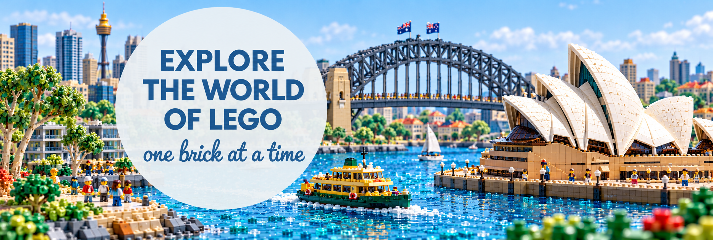

Founded in 1932, LEGO has grown to become the world's largest toy manufacturer.
This visualisation explores the company's trends from 2010 to 2025
LEGO pieces come in a wide range of colours, from familiar red, yellow and blue to less common options such as glow-in-the-dark.
These colours give builders the flexibility to create everything from colourful characters to realistic buildings and landscapes.
From 2010 to 2025, black, white and grey consistently occupy the top three positions for piece counts.
The rankings of other colour families vary each year, showing changes in their use across the LEGO catalogue.
LEGO caters to a wide range of ages, from sets recommended for children aged 1.5 years and above to those labelled 18+. The treemap shows how sets releases are divided among recommended age groups each year, with larger rectangles representing more sets. Comparing years shows how LEGO has evolved from 2010-2025. A noticeable change is that from 2020 onwards the number sets under the age bracket of 18+ dramastically increased. Showing that LEGO as a company in recent years have started to target an older customer base.
LEGO sets come in a wide range of sizes, from fewer than 100 pieces to more than 10,000 pieces. Between 2010 and 2025, two sets exceeded 10,000 pieces. The largest was the World Map, released in 2021, containing 11,695 pieces. Over this period, the median set size increased from 73.5 pieces in 2010 to 219 pieces in 2025, indicating a shift towards larger sets. The wider spread of set sizes in later years also suggests greater variety in the catalogue, with small builds offered alongside much larger sets.
LEGO’s catalogue includes both long-running themes and newer additions. From 2010 to 2025, City and Star Wars consistently have relatively high numbers of set releases. Minecraft shows an increase towards the end of the period, whereas Brickheadz has a noticeable peak in 2018. These patterns show how the balance of set releases changes across themes over time.
Even though LEGO was founded in 1932, minifigurines only started getting produced in 1978. Since then thousands of Minifigures have been created giving a version of life to the LEGO sets. This section explores the number of minifigures each theme has since 2010 as well as, the top 5 rankings for the sets with the most figurines.
LEGO is the largest toy manufacturer in the world existing since 1932 in Denmark. Due to this the LEGO company produces around 60 billion bricks every year. Therefore, factories and distribution centers are all over the world providing customers with a high quality product. This section explores the locations of factories and distribution centers as well as store locations around Australia.
This section explores how LEGO has grown over the years through revenue.
The currency being explored is Danish Krone since, LEGO is a Danish owned company.
From the bar chart it can been seen that in 2021 there was been a massive spike in revenue.
Multiple reasons have contributed to this such as, LEGO creating products for older customers.
A high of 83.5 billion DKK was achieved in 2025, showing how dominate LEGO is in the toy industry.
Additionally, the yearly revenue of regions is explored seeing the evolution of lego in Americas, Europe, Middle East, Africa, Asia and Pacific.
The visualisation below, shows the revenue from the three regions gathered from the annual report.
Use the slider to explore the data from 2017-2025.
Created by Daniel Anthony Boffa, October 25th 2026. FIT3179 Data Visualisation 2, Monash University. Generative AI (ChatGPT) was used to help write the json files, find sources for information and to check grammar. All data comes from the sources below and all charts were built by the author.
Rebrickable, LEGO Catalog Database Downloads, https://rebrickable.com/downloads/
Github, jbryer, brickset, https://github.com/jbryer/brickset/blob/main/data-raw/sets/2010.csv
Brickset, Minifigs, https://brickset.com/minifigs/
LEGO, From Production to Play: How the LEGO Group builds and delivers LEGO® products around the world, https://www.lego.com/en-us/aboutus/news/2025/april/from-production-to-play
LEGO, Stores, https://www.lego.com/en-us/stores
LEGO, Annual Report 2025, https://www.lego.com/cdn/cs/aboutus/assets/blte543dd46714c9226/The_LEGO_Group_2025_Annual_Report.pdf
LEGO, Annual Report 2023, https://www.lego.com/cdn/cs/aboutus/assets/blt7e9167f47da173a6/FINAL_Annual_Report_2023.pdf
LEGO, Annual Report 2021, https://www.lego.com/cdn/cs/aboutus/assets/blt248041929be3b572/Annual_Report_2021_ENG.pdf
LEGO, Annual Report 2019, https://www.lego.com/cdn/cs/aboutus/assets/blt55a9aaa4253b2fa5/Annual_Report_2019_ENG.pdf.pdf
LEGO, Annual Report 2018, https://www.lego.com/cdn/cs/aboutus/assets/blt02144956ae00afa1/Annual_Report_2018_ENG.pdf